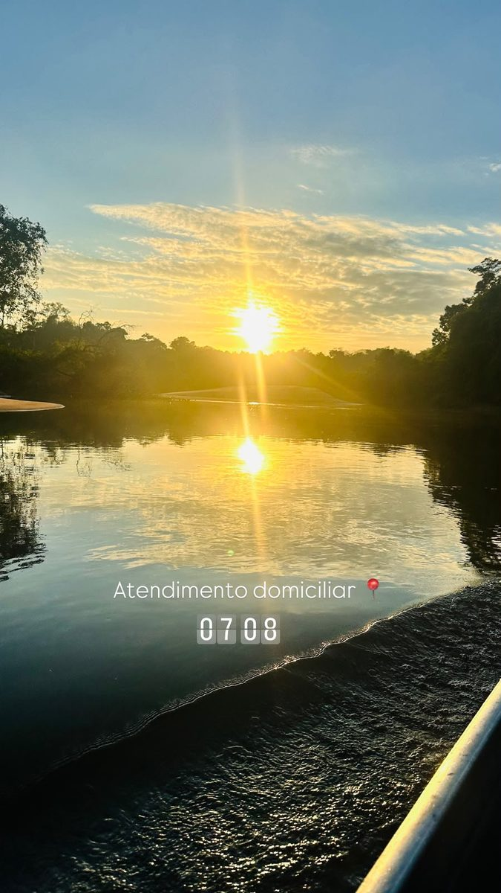
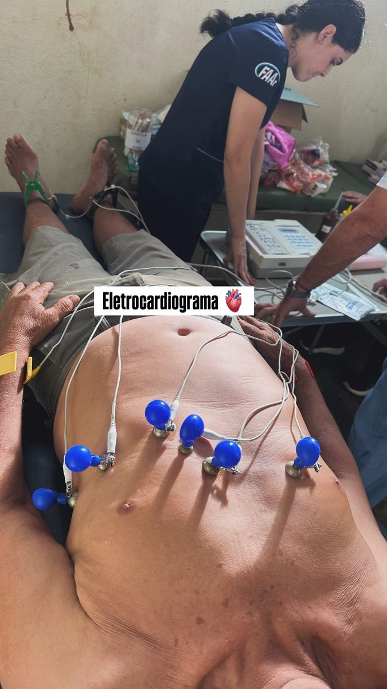
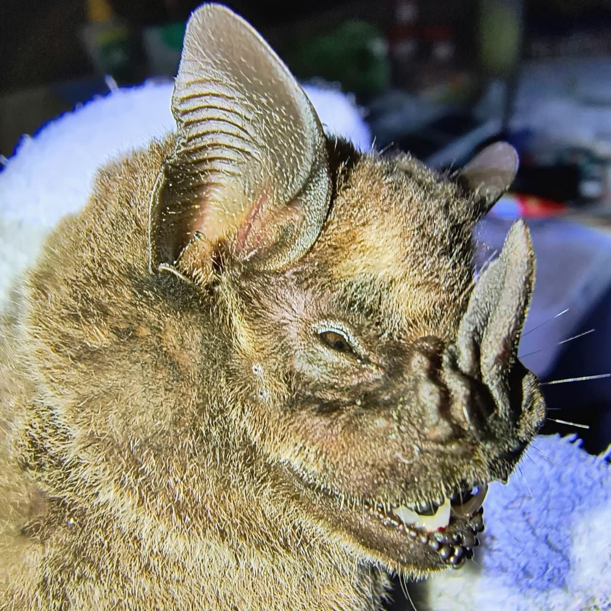
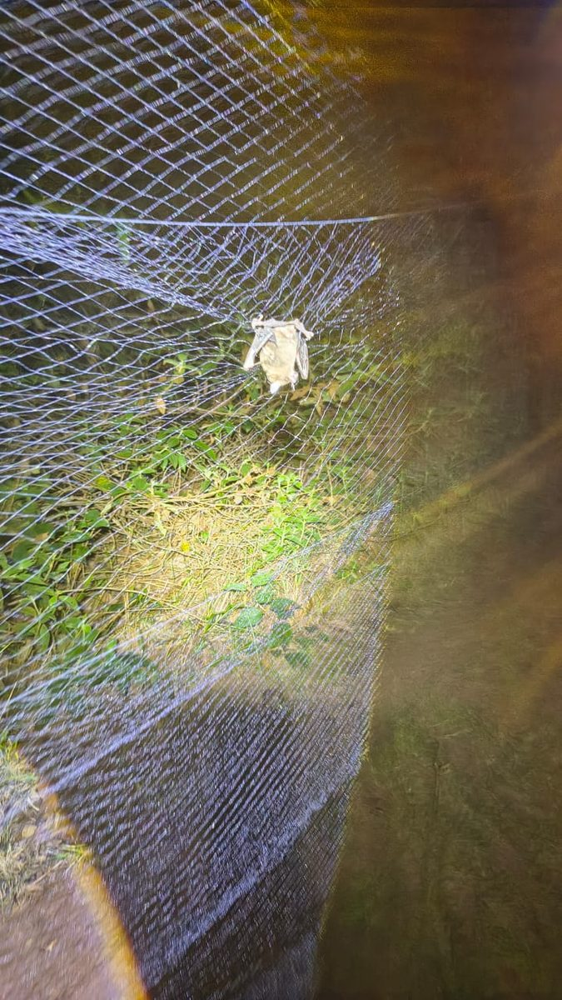
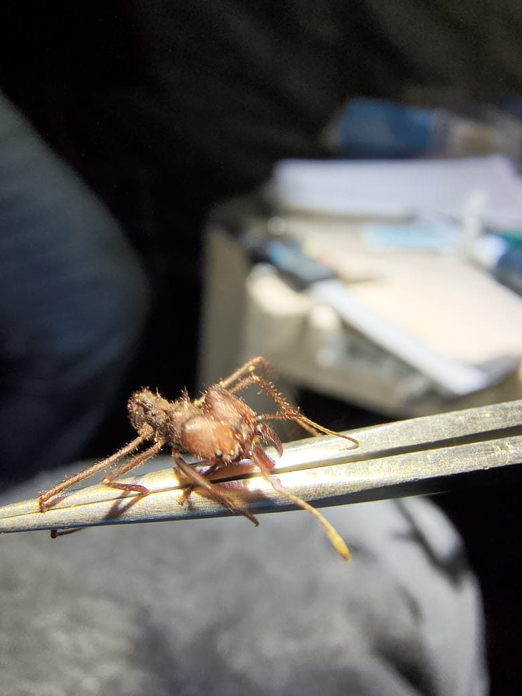
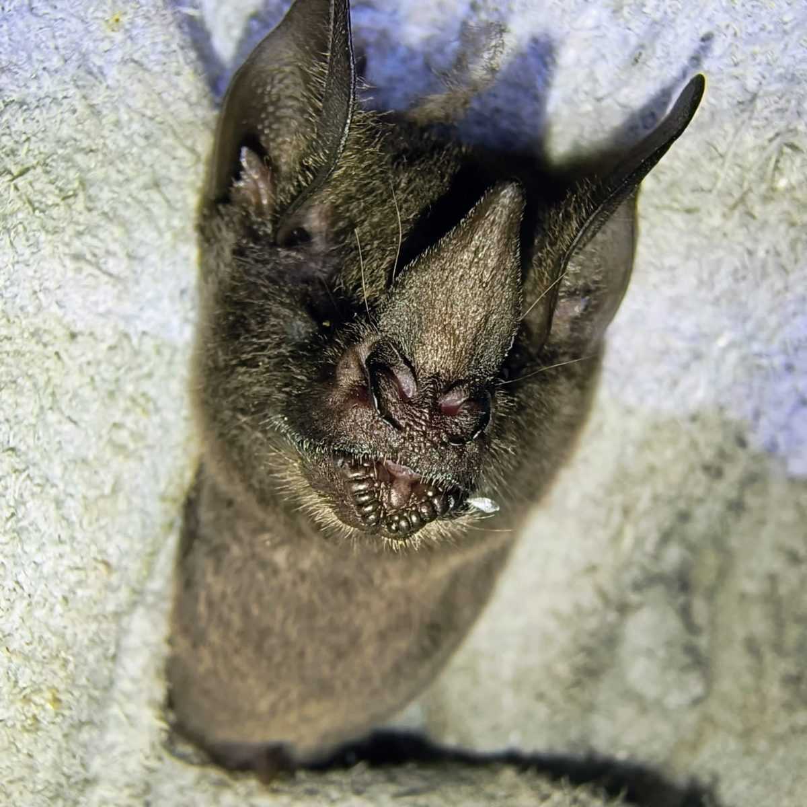
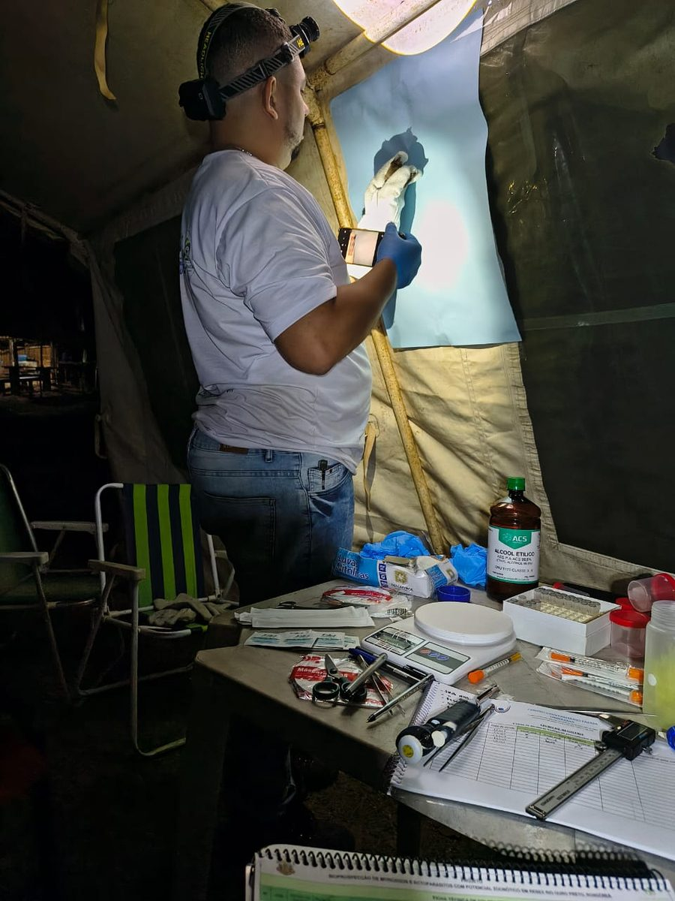
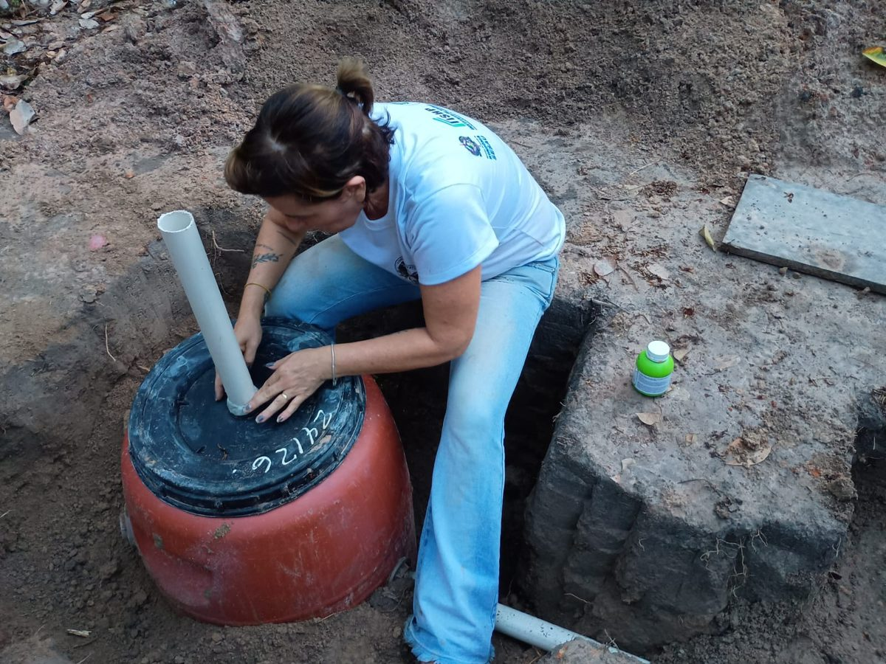
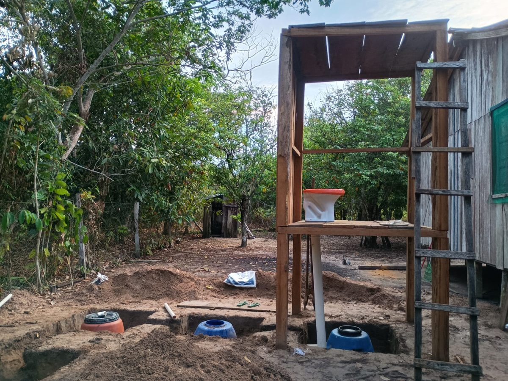
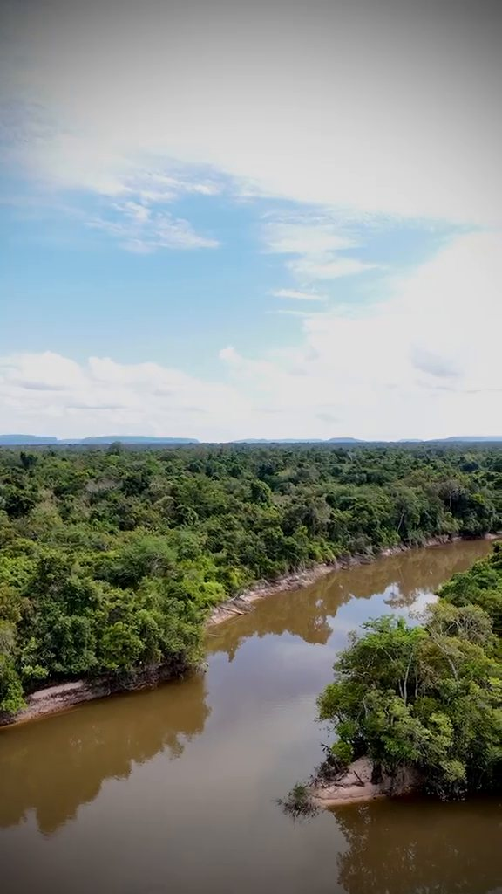

Em 30 segundos
- Toda a água de consumo analisada na comunidade estava contaminada por coliformes fecais.
- Cerca de 90% dos casos atendidos eram doenças crônicas, como hipertensão e dislipidemia.
- Não houve nenhum caso de malária ou leishmaniose entre as pessoas atendidas.
- À noite, a equipe capturou morcegos para procurar patógenos neles e nos ectoparasitos que vivem sobre eles.
- Um sistema de saneamento de R$ 2 mil foi construído com mão de obra e material da região.
O registro da foto marca 7h08. O barco sai com o sol ainda baixo, a caminho do atendimento domiciliar. É assim, pelo rio, que a II Expedição Científica RESEX Rio Ouro Preto chegou às famílias da Reserva Extrativista do Rio Ouro Preto, entre os municípios de Guajará-Mirim e Nova Mamoré, em Rondônia. A reserva foi criada em 12 de março de 1990 e está entre as quatro primeiras do país.

A expedição é realizada pela ONG Saúde Infinita, com apoio do INCT-CONEXAO, do CNPq/Ministério da Ciência, Tecnologia e Inovação, do Governo Federal, da FAPERO e da Secretaria de Estado da Saúde de Rondônia. Viagens como essa levam cerca de dez dias e reúnem médicos, biólogos, biomédicos, farmacêuticos, estudantes e uma arquiteta.
Atendimento primeiro, pesquisa depois
A equipe chega oferecendo consulta, exame e procedimento. As famílias, em troca, autorizam a coleta de informações e de material biológico, dentro de protocolos aprovados por Comitê de Ética em Pesquisa e, no caso dos animais, por Comissão de Ética no Uso de Animais (CEUA).
"Por mais que a gente esteja aqui como pesquisador, a gente não pode virar as costas para as necessidades da população."
Coordenação da expediçãoNa prática, foram eletrocardiogramas feitos em maca improvisada, atendimentos casa a casa e uma biópsia por punch para análise histopatológica de uma lesão suspeita de melanoma, feita por uma acadêmica de Medicina com um médico da equipe ao lado.


O que apareceu nas consultas
Entre as pessoas atendidas não houve caso de malária nem de leishmaniose, as duas doenças que costumam vir à cabeça quando se fala em Amazônia. A sorologia apontou um caso de hepatite C. A equipe também registrou um caso de tuberculose.
O grosso do atendimento foi outro. Segundo o balanço preliminar da equipe, cerca de 90% dos casos eram doenças crônicas não transmissíveis, como hipertensão e dislipidemia. É o mesmo perfil de quem vive nas cidades, só que a horas de barco do hospital mais próximo. Foi para esse ponto que a expedição passou a dirigir seus esforços.
As noites de captura de morcegos
Quando escurece, o trabalho muda. Redes de neblina são armadas na mata e os biólogos passam a trabalhar de lanterna na cabeça, fazendo biometria, pesagem, coleta de amostras com seringa de insulina e a procura pelos ectoparasitos. O estudo faz parte do projeto de bioprospecção de microrganismos e ectoparasitos com potencial zoonótico na RESEX Rio Ouro Preto.


"A nossa ideia é fazer o levantamento de morcegos, dos quais a gente não tem registro para essa região, e buscar também os ectoparasitos, que se alimentam do sangue dos morcegos. Podem ser moscas exclusivas de morcegos, carrapatos, ácaros. Através desses ectoparasitos a gente faz uma análise molecular e tenta descobrir quais tipos de patógeno: bactérias, fungos, protozoários."
Biólogos responsáveis pela capturaUm dos alvos da análise molecular é a bactéria Bartonella. A equipe quer saber se esses microrganismos circulam por uma área remota e pouco amostrada da Amazônia Ocidental, e de que maneira.

A preocupação de fundo tem nome: spillover, o momento em que um patógeno da fauna silvestre passa para as pessoas. A degradação do ambiente, as mudanças climáticas, a perda de biodiversidade e a compressão dos ecossistemas empurram os animais silvestres para perto das casas, e esse contato pode custar caro à saúde pública. Os morcegos voam longe e carregam ectoparasitos consigo, o que faz deles um bom ponto de partida. Esse olhar conjunto para pessoas, animais e ambiente é o que a área chama de Saúde Única.

A água que a comunidade bebe
O achado mais duro veio da água. Toda a água de consumo analisada na localidade estava contaminada por coliformes fecais, de origem humana e não humana, segundo o levantamento da equipe, que também investiga o papel dos reservatórios domésticos nessa contaminação.
A arquiteta da equipe desenvolveu um protótipo de saneamento pensado para a realidade ribeirinha. Custou cerca de R$ 2 mil, com mão de obra local e areia da própria região. Só a brita veio de fora. O morador levantou a estrutura de madeira e o banheiro.
Como o sistema funciona
- Recebe. O esgoto do banheiro vai para bombonas enterradas e vedadas do ar.
- Fermenta. Sem oxigênio, o pH cai, bactérias e protozoários morrem e os vírus são inativados.
- Filtra. O que resta passa para um compartimento revestido de brita e areia.
- Devolve. Coberto de terra, esse compartimento recebe mudas de bananeira e açaí, que absorvem o efluente já tratado sem contaminar o solo.


O que vem agora
| Concluído | Construção do protótipo na comunidade |
| Em andamento | Teste do sistema com água bruta captada no rio Ouro Preto |
| Próxima etapa | Tornar a água potável |
| No laboratório | Análise molecular das amostras de morcegos e de seus ectoparasitos |

Perguntas frequentes
O que é a RESEX Rio Ouro Preto?
É a Reserva Extrativista do Rio Ouro Preto, criada em 12 de março de 1990 entre os municípios de Guajará-Mirim e Nova Mamoré, em Rondônia. Foi uma das quatro primeiras reservas extrativistas do Brasil e abriga famílias que vivem do extrativismo, da agricultura de subsistência e da pesca artesanal.
O que é Saúde Única (One Health)?
É a abordagem que trata a saúde humana, a saúde animal e a saúde ambiental como partes de um mesmo sistema. Na prática, significa que não dá para cuidar das pessoas sem olhar para os animais e para o ambiente em que elas vivem.
Por que estudar morcegos na Amazônia?
Morcegos se deslocam por grandes distâncias e carregam ectoparasitos que podem abrigar bactérias, fungos e protozoários. Estudá-los ajuda a perceber o risco de spillover, a passagem de patógenos da fauna silvestre para as pessoas, antes que ele vire surto.
Quanto custa o sistema de saneamento desenvolvido pela equipe?
Cerca de R$ 2 mil por unidade, com mão de obra e areia locais. Só a brita foi trazida de fora, e o próprio morador construiu a estrutura de madeira e o banheiro.
Quem esteve em campo
Realização: ONG Saúde Infinita. Apoio: INCT-CONEXAO, CNPq/MCTI, Governo Federal, FAPERO e Secretaria de Estado da Saúde de Rondônia.
Choveu muito nos últimos dias, as estradas alagaram e a equipe dormiu de rede. Ninguém passou mal e a comunidade foi atendida. As amostras vão agora para o laboratório, e o protótipo de saneamento segue de pé, esperando os testes.
In English
Contaminated water, bats and a low-cost toilet: findings from a scientific expedition in the Brazilian Amazon. About 30 researchers travelled up the Ouro Preto River, in Rondônia, for the II Scientific Expedition to the Rio Ouro Preto Extractive Reserve. The mission combined primary healthcare, wildlife pathogen surveillance and sanitation engineering under a One Health approach. Every drinking water sample analysed in the community was contaminated with faecal coliforms. Around 90% of the clinical cases were chronic non-communicable diseases, and no malaria or leishmaniasis was found among those treated. At night, the team mist netted bats to collect biological samples and ectoparasites such as bat flies, ticks and mites, screening them by molecular analysis for zoonotic pathogens including Bartonella, in a region with no previous records. A low cost anaerobic sanitation prototype, built for roughly R$ 2,000 with local labour and materials, was completed during the expedition.